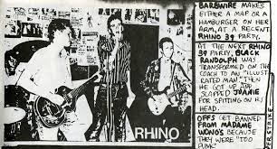

Rhino 39 is a lesser-known, yet highly influential punk rock band that emerged from the Southern California punk scene in the late 1970s. While they may not have achieved the mainstream recognition that some of their contemporaries did, Rhino 39’s raw energy and aggressive sound made them a significant player in the underground punk movement.
The Early Days and Formation
Rhino 39 was formed in 1977 in Long Beach, California. The band's original lineup featured Dave Bratton on vocals, Larry Parrot on guitar, Tim Carhart on bass, and John MacLeod on drums. Named after an obscure science fiction story, the band started playing at small venues, quickly gaining a local following for their fast-paced music and rebellious lyrics. They became regulars in the Los Angeles punk scene, playing alongside iconic acts like Black Flag, Circle Jerks, and the Germs.
Rhino 39's concert history
The Style and Sound
Rhino 39’s music embodies the essence of early punk rock: loud, fast, and unapologetically abrasive. Their sound combines gritty, distorted guitar riffs with frenetic drumming and snarling vocals. While their music is aggressive, it retains a strong sense of melody and structure, setting them apart from some of the more chaotic punk bands of the era. Songs like “Xerox” and “No Compromise” capture the band's unique blend of rage and intelligence.
Tragic Loss and Legacy
Sadly, just as the band was gaining momentum, they suffered a major tragedy. In 1980, lead singer Dave Bratton died in a car accident, cutting short the group’s promising trajectory. This loss devastated the band and the local punk community. Despite their relatively short run, Rhino 39’s influence endured. Their self-titled EP, released on Dangerhouse Records, is considered a rare gem among punk enthusiasts, and the band’s reputation continues to grow among collectors of punk vinyl.
Rhino 39’s music encapsulates the spirit of the early Los Angeles punk scene— Fierce, Independent, and Short-Lived. While their time together was brief, their contribution to punk rock was significant, and they remain an important piece of the genre’s history.